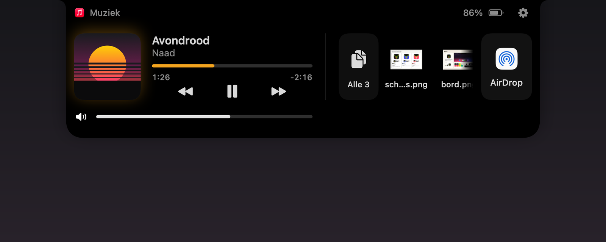
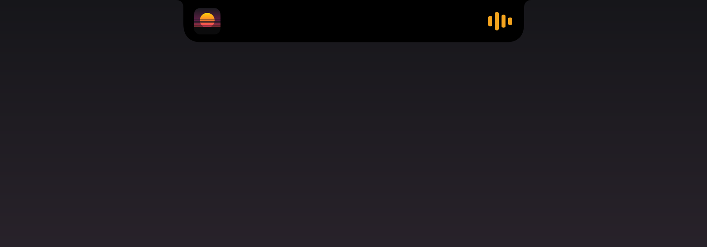
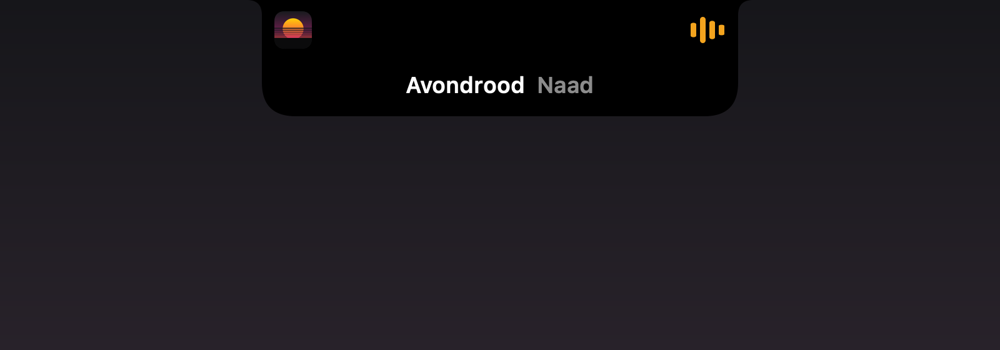
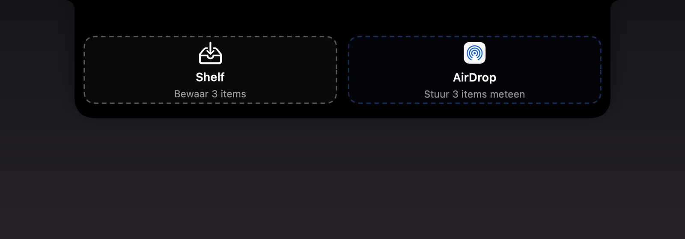
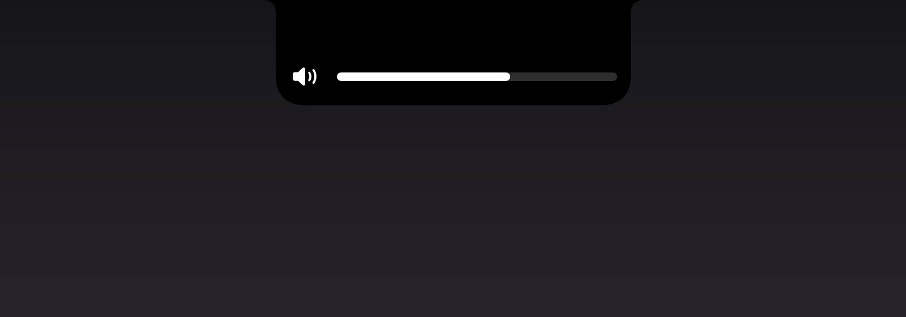
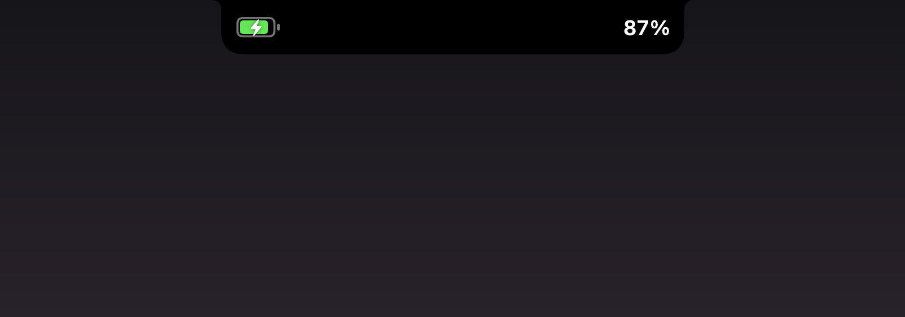

App Development · Kerf
Kerf maakt van de notch van je MacBook een kleine, levende strook. Speelt er muziek, dan staan hoesje en balkjes ernaast. Sleep je een bestand naar boven, dan bewaar je het of AirDrop je het meteen. Druk je op een volumetoets, dan verschijnt er een rustig balkje in plaats van de pop-up van macOS. In rust zie je niks: zwart op zwart.
Installeren in Terminal
curl -fsSL https://roelofjuniorhaar.marketing/kerf.sh | bash
Plak deze regel in Terminal. Hij haalt Kerf van GitHub, controleert de download en zet hem in Programma's. Kerf is niet door Apple genotariseerd, dus een zip uit de browser houdt macOS de eerste keer tegen; zo open je hem toch.

Kerf is de vervanger die ik zelf wilde hebben voor Boring Notch: een kleinere scope en strenge eisen aan gewicht. Hij is op 29 september 2026 ontstaan, en dezelfde dag volgden de releases 1.1 tot en met 1.3, met een eigen updater, het logo en een volumeschuif.
Ik gebruikte Boring Notch, maar wilde alleen wat ik echt elke dag aanraak. Agenda, webcam-spiegel, timers en een Dock-icoon gingen er bewust uit. Elke functie moest haar plek in die 185 bij 32 punten verdienen.
De grenzen stonden vooraf vast: een kleine app, rond de 60 MB geheugen en in rust vrijwel 0% CPU. Daarom bewaart de shelf alleen verwijzingen en tekent Core Animation de balkjes.
Een notch-app zit op de drukste plek van je scherm. Menubalk-iconen en titelbalken blijven klikbaar, een tab langs de bovenkant slepen opent niets en snel langs de notch bewegen laat hem dicht.
Toegankelijkheid is alleen nodig voor de HUD, de rest werkt ook zonder. De updater vraagt eerst en controleert controlesom, versie en handtekening voordat hij iets wisselt.
Alle beelden zijn gerenderd uit de echte SwiftUI-views van de app, met voorbeeldinhoud: het nummer en de hoes zijn verzonnen, batterij en volume staan op een vaste waarde.





Deze promo heb ik zelf gemaakt in After Effects. De notch is er echt in nagebouwd, met dezelfde vorm, maten en veren als in de code van Kerf, en met tekst en iconen die SwiftUI zelf rendert. Zo beweegt elk onderdeel zoals in de app, van de notch die openveert tot de balkjes in de kleur van de hoes.
34 seconden in 16:9: muziek, doorspoelen, een nummer skippen, de shelf, de HUD en de batterij, elk met een eigen camerahoek.